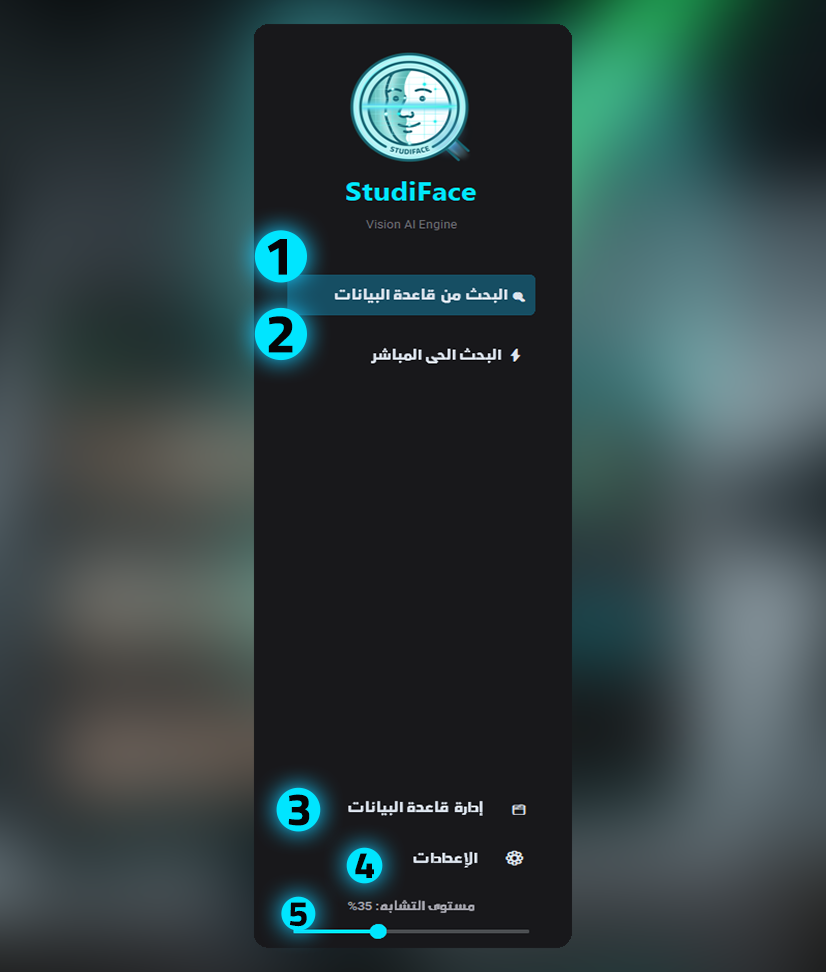
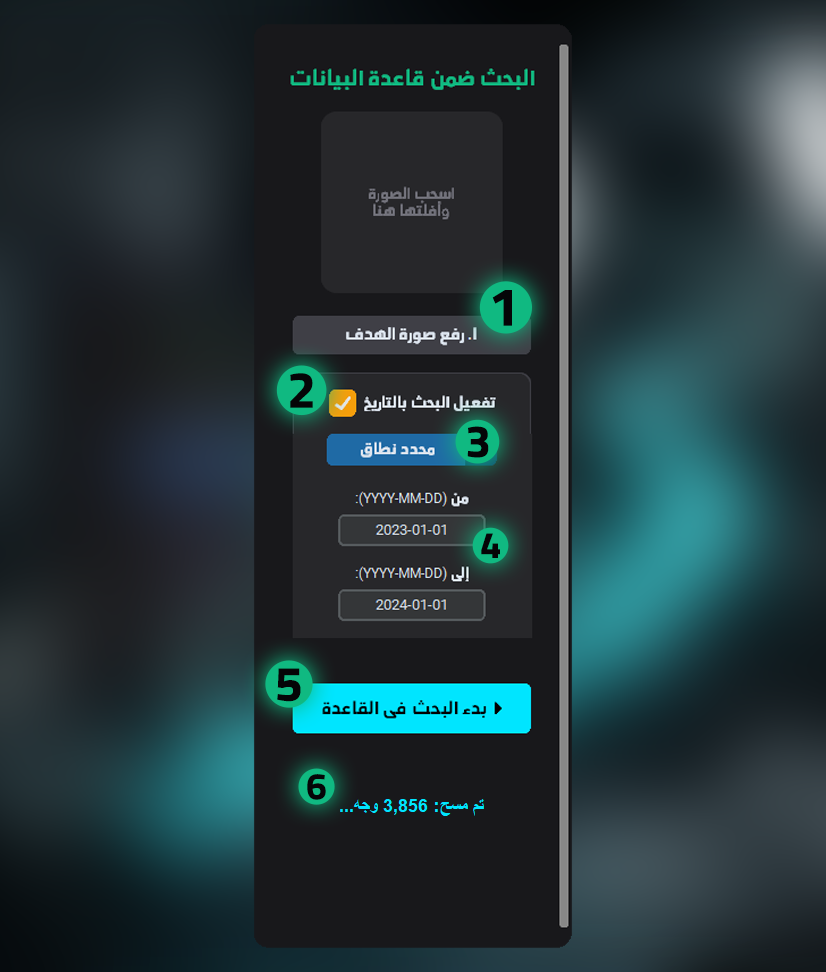
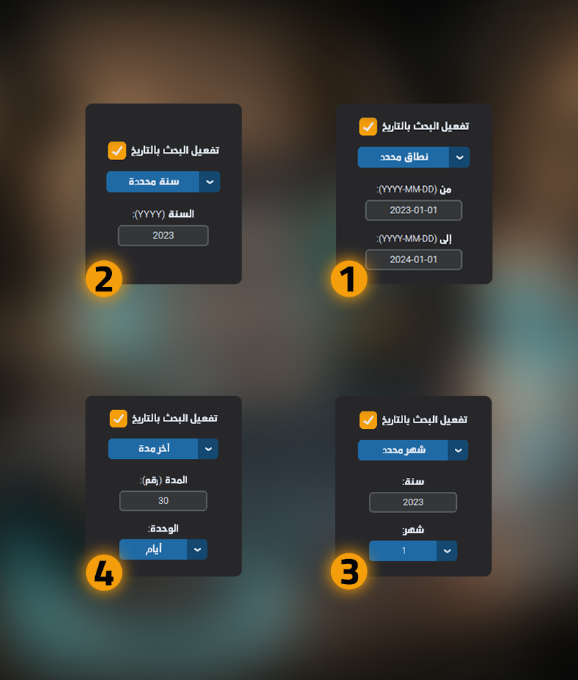
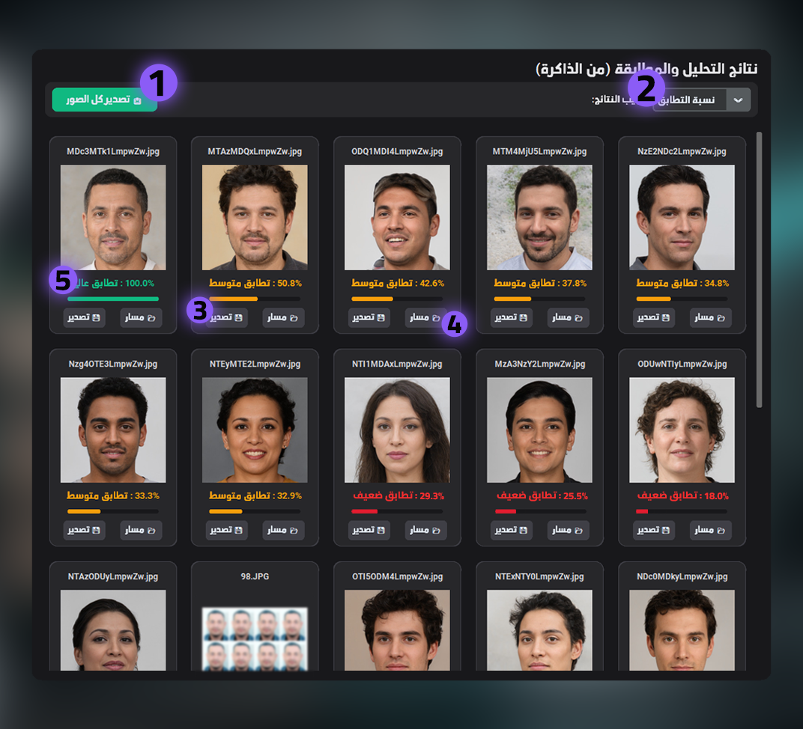
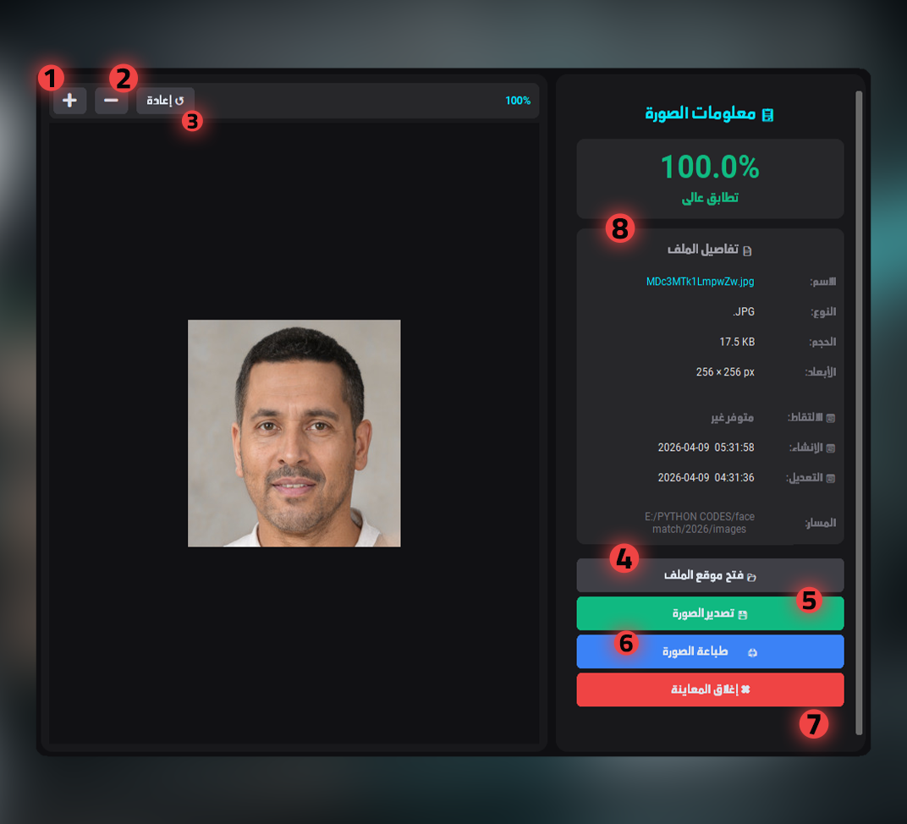
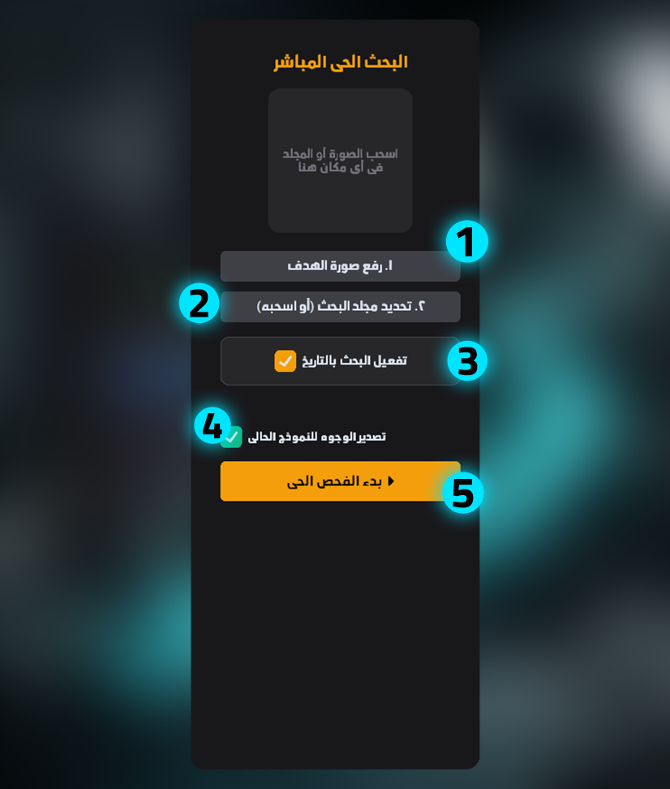
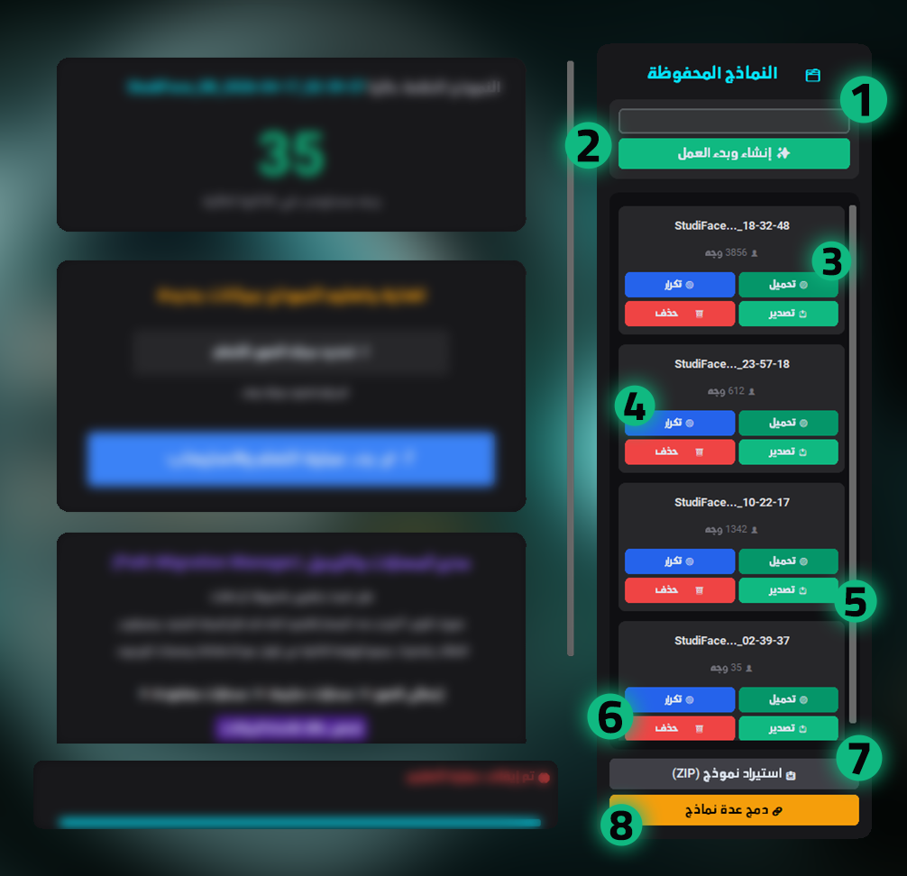
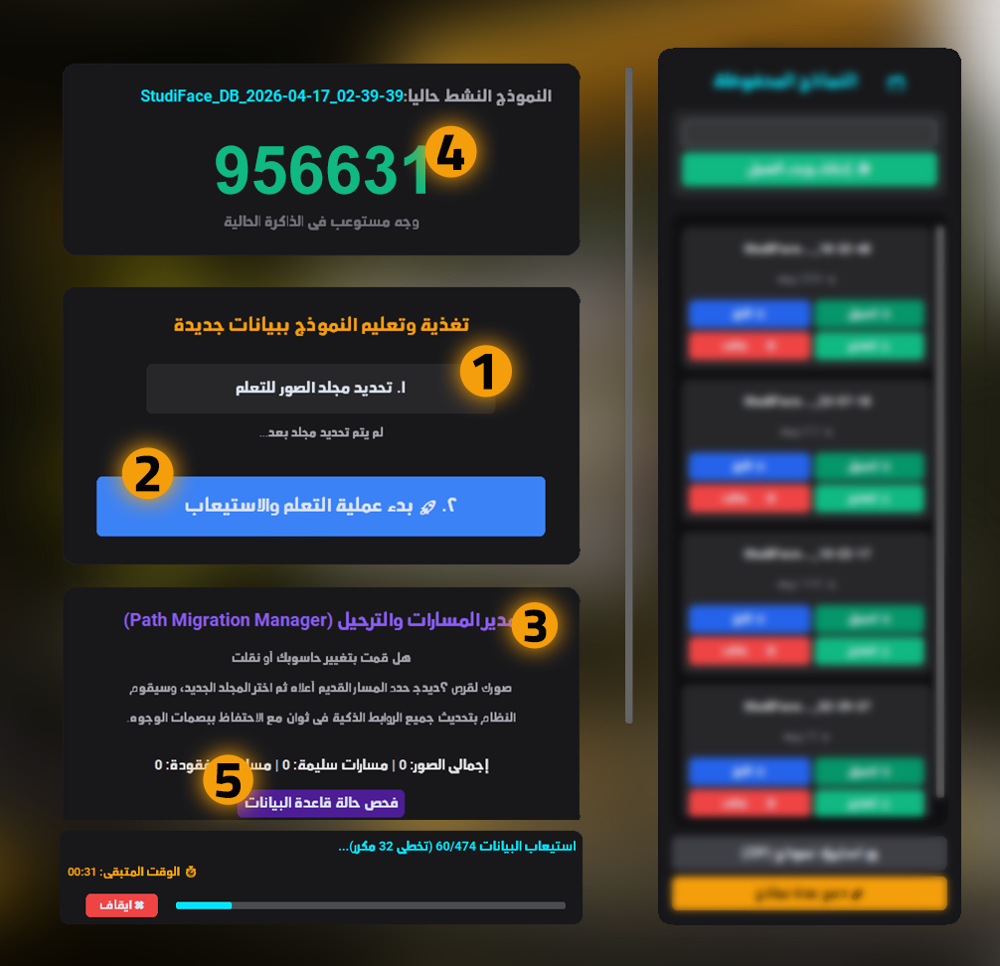
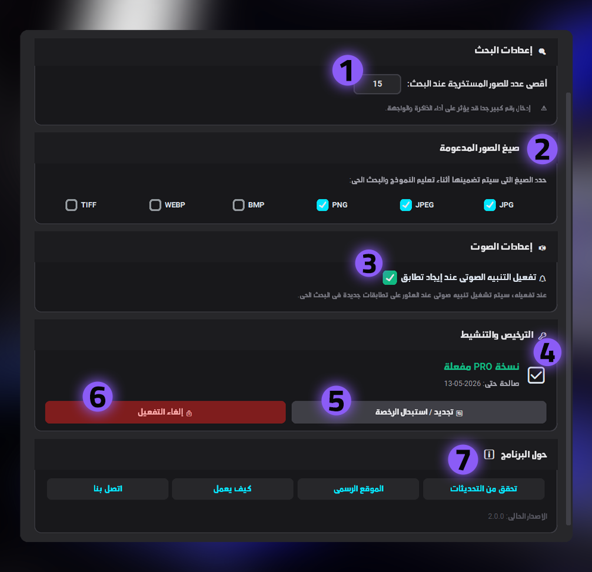

1. التبويبات والمفاهيم الأساسية
البحث من قاعدة البيانات
الفكرة: استرجاع الصور الأصلية المخزنة مسبقاً في ذاكرة البرنامج بسرعة فائقة.
العمل: يفتح واجهة مطابقة الوجوه المؤرشفة للوصول للنسخة الرقمية في أجزاء من الثانية.
مثال: طلب عميل صورة التقطها قبل سنة، ترفع صورته ليجد لك الأصلية فوراً.
البحث الحي المباشر
الفكرة: فحص المجلدات الجديدة لحظياً دون انتظار أرشفتها.
العمل: يمسح مجلد تختاره على القرص ويقارن صوره بالهدف مباشرة.
مثال: عريس يريد صوره من مجلد حفل انتهيت منه للتو ولم تؤرشفه بعد.
إدارة قاعدة البيانات
الفكرة: تنظيم أرشيف الاستوديو وتعليم الذكاء الاصطناعي وجوهاً جديدة.
مثال: إضافة كافة صور عام 2025 لذاكرة البرنامج للبحث عنها مستقبلاً.
الإعدادات
تخصيص الخيارات، أعداد النتائج، وتفعيل التنبيهات وإدارة الرخصة.
مستوى التشابه
تحديد حساسية المطابقة (مثلاً 70%) لاستبعاد الأقارب المتشابهين.
2. واجهة البحث في الأرشيف الأساسية
رفع صورة الهدف
الفكرة والعمل: تزويد البرنامج بصورة الزبون ليقوم بتحليل واستخراج ملامح وجهه.
مثال: اختيار صورة "واتساب" باهتة أرسلها زبون لتبحث عن أصلها.
تفعيل البحث بالتاريخ
الفكرة: حصر البحث في فترة زمنية لزيادة السرعة وتجاهل السنوات الخاطئة.
محدد النطاق (القائمة المنسدلة)
الفكرة: اختيار طريقة تحديد الوقت (نطاق، سنة، شهر) ليغير شكل حقول الإدخال.
من / إلى (التواريخ)
تحديد البداية والنهاية الدقيقة.
بدء البحث في القاعدة
إطلاق محرك المطابقة الرقمية.
عداد الوجوه (تم مسح...)
يعرض تقدم الفحص اللحظي أثناء مسح البرنامج لآلاف الصور في الثانية الواحدة.


3. تفاصيل محدد النطاق الزمني
نطاق محدد
الفلترة زمنياً لتشمل الصور التي يقع تاريخ تعديلها بين يوم البداية ويوم النهاية. (مثال: عطلة الصيف بين شهر 6 و 8).
سنة محددة
تضييق النطاق ليشمل عاماً كاملاً بضغطة واحدة (مثال: إدخال 2023 للبحث فقط في تلك السنة).
شهر محدد
يسمح باختيار السنة ورقم الشهر لحصر المطابقة ضمن أيامه (مثال: البحث في صور شهر شتنبر الخاص بالدخول المدرسي).
آخر مدة
يحسب الفترة رجوعاً من تاريخ اليوم (مثال: صور صورتها خلال "آخر 30 يوم").
4. التعامل مع النتائج وشاشة المعاينة
كل ما تحتاجه بعد عثور الذكاء الاصطناعي على صور العميل.


5. واجهة البحث الحي (مجلدات غير مؤرشفة)


6. إدارة الأرشيف (النماذج)
7. استيعاب الأرشيف (التعلم)

8. الإعدادات والتحكم

أصبح البرنامج واضحاً الآن؟
استمتع بتجربة أذكى أداة صُممت خصيصاً لتوفير وقتك في الاستوديو وزيادة مبيعاتك من الصور القديمة.
حمل البرنامج وجربه الآن